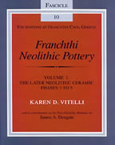

Karen D. Vitelli
Excavations at Franchthi Cave, Greece Fascicle 10. Franchthi Neolithic Pottery Volume 2
Indiana University Press: Bloomington, 1999
 |
This fascicle completes the presentation of the ceramic remains from the Franchthi Cave excavations. As in her study of the earlier Neolithic ceramics (Fascicle 8), Vitelli gives careful attention in her analyses to the context of the finds and to the traces of the potters' procedures. The conclusions of these analyses differ significantly from earlier preliminary reports. Substantial gaps in occupation separate each of the three later Neolithic phases, whose remains appear to represent short-term, probably ceremonial activities rather than continuous settled habitation at the site. The concluding chapter explores the implications of the Franchthi ceramic analysis for understanding the complex social and economic developments of the later Neolithic in the larger Aegean area. KAREN D. VITELLI is Professor of Anthropology at Indiana University and Director of the Franchthi Project. Copies may be ordered by contacting: |
| Back to Publications | Table of Contents |